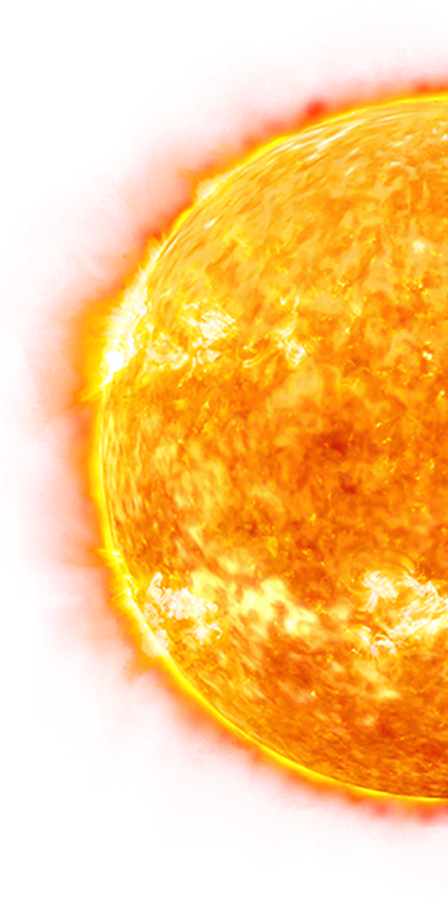
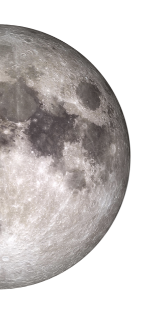

UniVerse
Um site simples sobre o vasto e majestoso espaço, com algumas informações sobre ele
 Os planetas NÃO ESTÃO em escala real nem em ordem.
Saturno
A exploração de Saturno, o sexto planeta do nosso sistema solar, tem sido realizada por meio de missões espaciais que forneceram informações valiosas sobre seus anéis, atmosfera, luas e características geológicas. Essas missões têm nos permitido compreender melhor esse fascinante mundo gasoso. A primeira missão a visitar Saturno foi a Pioneer 11, lançada pela NASA em 1973. A Pioneer 11 realizou um sobrevoo de Saturno em 1979, fornecendo as primeiras imagens de alta resolução dos anéis e do ambiente saturniano. No entanto, foi a missão Voyager que proporcionou um estudo mais detalhado de Saturno. A Voyager 1 sobrevoou Saturno em 1980, seguida pela Voyager 2 em 1981. As sondas Voyager capturaram imagens impressionantes dos anéis de Saturno, descobriram novas luas e revelaram características atmosféricas, como tempestades e a Grande Mancha Branca. As imagens e os dados coletados pelas Voyager ajudaram a expandir nosso conhecimento sobre Saturno e suas luas, incluindo a icônica lua Titã. No final dos anos 1990 e início dos anos 2000, a NASA lançou a missão Cassini-Huygens para uma exploração mais detalhada de Saturno. A sonda Cassini orbitou Saturno por mais de 13 anos, de 2004 a 2017, fornecendo informações sem precedentes sobre o planeta, seus anéis e suas luas. A Cassini revelou detalhes complexos sobre a estrutura dos anéis de Saturno, bem como a presença de gêiseres na lua Encélado e lagos de hidrocarbonetos líquidos na lua Titã. Além disso, a sonda Huygens, que fazia parte da missão Cassini, pousou com sucesso na superfície de Titã, fornecendo as primeiras imagens e dados in situ dessa lua intrigante. A exploração de Saturno tem como objetivo entender a formação e a evolução dos planetas gasosos, bem como a dinâmica atmosférica e os processos de lua-planeta interações. Saturno é famoso por seus impressionantes anéis, que são compostos principalmente de partículas de gelo. Estudar a estrutura e a composição desses anéis ajuda a desvendar os processos de formação de sistemas de anéis em todo o universo. Além disso, as luas de Saturno, como Titã e Encélado, têm sido alvos significativos de exploração. Titã é considerada uma das luas mais parecidas com a Terra em nosso sistema solar, com uma atmosfera densa e a presença de lagos e rios líquidos em sua superfície. Estudar Titã nos ajuda a compreender os processos químicos e atmosféricos que podem ocorrer em outros corpos celestes. Encélado, por sua vez, possui plumas de gás e partículas de água sendo lançadas a partir de sua superfície gelada, sugerindo a presença de um oceano subterrâneo e potenciais condições habitáveis. Embora atualmente não haja missões planejadas para Saturno, a exploração continua por meio de observações telescópicas e análise de dados coletados pelas missões anteriores. Essas informações têm e continuarão a fornecer uma base sólida para a compreensão de Saturno e sua importância para a nossa compreensão do sistema solar e além.
Jupiter
A exploração de Júpiter tem sido um objetivo fascinante para cientistas e astrônomos há décadas. Júpiter, o maior planeta do nosso sistema solar, oferece uma infinidade de mistérios e informações valiosas sobre a formação e evolução dos planetas. A exploração de Júpiter começou com missões espaciais pioneiras, como as sondas Pioneer 10 e 11, que foram lançadas nas décadas de 1970 e forneceram as primeiras imagens de perto do planeta gigante. Em seguida, a Voyager 1 e 2 visitaram Júpiter em 1979, revelando detalhes impressionantes de suas luas e da tempestade conhecida como a Grande Mancha Vermelha. A sonda Galileo, lançada em 1989, foi a primeira a entrar em órbita em torno de Júpiter e realizou uma exploração extensa do planeta e suas luas. A missão Galileo mapeou a atmosfera jupiteriana, estudou sua magnetosfera e revelou detalhes sobre as luas de Júpiter, incluindo a descoberta de possíveis oceanos subsuperficiais em luas como Europa, Ganimedes e Calisto. Mais recentemente, a sonda Juno, lançada em 2011, chegou a Júpiter em 2016 e está atualmente em órbita ao redor do planeta. A missão Juno tem como objetivo estudar a estrutura interna de Júpiter, sua composição, magnetosfera e origem. A sonda está fornecendo dados valiosos sobre a atmosfera de Júpiter, suas tempestades, a Grande Mancha Vermelha e as características peculiares de seu campo magnético. Além das missões espaciais, os telescópios na Terra e no espaço continuam a observar Júpiter regularmente. Essas observações fornecem informações complementares sobre a atmosfera, tempestades e mudanças sazonais do planeta. A exploração futura de Júpiter também está sendo planejada. Por exemplo, a missão Europa Clipper, da NASA, está programada para ser lançada em meados da década de 2020 e se concentrará na lua de Júpiter, Europa, que abriga um oceano subsuperficial que pode conter condições favoráveis para a vida. A exploração de Júpiter nos permite entender melhor os processos planetários, a formação e evolução de sistemas solares e as condições que podem favorecer a existência de vida. Júpiter continua a intrigar e desafiar os cientistas, e cada nova missão e observação nos leva a descobertas emocionantes e avanços em nossa compreensão do universo.
Netuno
A exploração de Netuno, o oitavo planeta do sistema solar, é um assunto fascinante que tem despertado o interesse dos cientistas há décadas. Embora tenhamos informações limitadas sobre Netuno, as missões espaciais têm nos proporcionado algumas descobertas surpreendentes sobre esse gigante gasoso distante. Até o momento, apenas uma sonda espacial visitou Netuno, a Voyager 2, em 1989. Durante sua passagem, a Voyager 2 capturou imagens de alta resolução e coletou dados valiosos sobre a atmosfera, os anéis e as luas de Netuno. Essa missão revelou a presença de nuvens brilhantes e tempestades violentas na atmosfera de Netuno, incluindo a famosa "Grande Mancha Escura". Desde a visita da Voyager 2, houve propostas para enviar uma nova missão a Netuno, mas até agora nenhuma foi realizada. No entanto, os cientistas têm usado observações telescópicas e modelos computacionais para estudar esse planeta a distância. Eles têm procurado entender a composição e a estrutura interna de Netuno, além de investigar a origem e a evolução de seus anéis e luas. Uma das principais razões para explorar Netuno é o seu ambiente único. Netuno é conhecido por seus ventos extremamente fortes e sua atmosfera composta principalmente de hidrogênio, hélio e metano. Compreender a dinâmica atmosférica desse planeta pode fornecer insights valiosos sobre os processos atmosféricos em outros mundos gasosos, como Júpiter e Saturno. Além disso, Netuno possui uma coleção diversificada de luas, incluindo Tritão, sua maior lua e um objeto de grande interesse científico. Tritão é único porque orbita Netuno em direção contrária à rotação do planeta, sugerindo que pode ter sido capturado de outra região do sistema solar. Estudar Tritão pode nos ajudar a compreender melhor a formação e a evolução das luas e dos planetas em nosso sistema solar. Embora ainda não tenhamos planos imediatos para uma nova missão a Netuno, a exploração espacial está em constante evolução. À medida que a tecnologia avança e os recursos permitem, é possível que futuras missões sejam planejadas para estudar de perto esse fascinante gigante azul e suas misteriosas luas.
Marte
A exploração de Marte tem sido uma das áreas mais emocionantes e intensivas em termos de pesquisa no campo da exploração espacial. Marte, muitas vezes referido como o "Planeta Vermelho", tem capturado a imaginação da humanidade como um possível local para a vida extraterrestre e como um destino potencial para futuras missões tripuladas. A exploração de Marte começou com missões pioneiras, como as sondas Mariner e Viking, lançadas nas décadas de 1960 e 1970, respectivamente. As sondas Mariner forneceram as primeiras imagens em close-up do planeta, enquanto as sondas Viking foram as primeiras a pousar em Marte e realizar experimentos biológicos em busca de sinais de vida. No entanto, foi com o avanço das missões robóticas mais recentes que obtivemos avanços significativos em nosso conhecimento sobre Marte. A NASA tem sido uma líder nessa exploração, com missões como o rover Sojourner, que foi o primeiro a explorar a superfície marciana em 1997. Em seguida, vieram os rovers Spirit e Opportunity, que aterrissaram em 2004 e superaram em muito suas expectativas de vida útil, explorando a geologia marciana por vários anos. O rover Curiosity, lançado em 2011, foi uma missão de grande destaque, com o objetivo de determinar se Marte já abrigou condições ambientais favoráveis à vida microbiana. O Curiosity tem explorado a cratera Gale e revelado evidências de que Marte possuiu água líquida no passado e que a região estudada possui os ingredientes químicos necessários para a vida microbiana. Além das missões da NASA, outras agências espaciais também contribuíram para a exploração de Marte. A Agência Espacial Europeia (ESA) lançou a sonda Mars Express em 2003, que orbita Marte e fornece imagens de alta resolução do planeta. A Índia também entrou na exploração de Marte com a bem-sucedida missão Mars Orbiter Mission em 2013. O destaque mais recente na exploração de Marte foi o rover Perseverance, lançado em 2020 pela NASA. O Perseverance tem como objetivo buscar sinais de vida passada em Marte, coletar amostras de rochas e regolito marcianos para futura missão de retorno à Terra e demonstrar tecnologias-chave para futuras missões tripuladas. Além dos rovers, a exploração de Marte também envolve missões orbitais, como a Mars Reconnaissance Orbiter e a Mars Odyssey, que estão estudando a atmosfera, a geologia e o clima do planeta. A exploração futura de Marte continua em andamento. A NASA e outras agências espaciais têm planos ambiciosos para missões tripuladas, com o objetivo de enviar astronautas para Marte nas próximas décadas. Essas missões visam aprofundar nosso conhecimento sobre o planeta, buscar sinais de vida e estabelecer uma presença humana sustentável em Marte. A exploração de Marte é crucial para entender a evolução planetária, o potencial de vida em outros mundos e para abrir caminho para futuras explorações humanas no espaço. Cada nova missão e descoberta em Marte nos aproxima de respostas importantes sobre nossas origens e sobre a possibilidade de vida além da Terra.
Urano
A exploração de Urano, o sétimo planeta do sistema solar, tem sido bastante limitada em comparação com outros planetas. Até o momento, apenas uma sonda espacial, a Voyager 2, visitou Urano em 1986, fornecendo a maior parte dos dados que temos sobre esse planeta distante. Durante a passagem da Voyager 2 por Urano, foram capturadas imagens e coletados dados importantes sobre a atmosfera, a estrutura interna, os anéis e as luas do planeta. Essa missão revelou a presença de nuvens de metano na atmosfera superior de Urano e descobriu dez novas luas, além das cinco conhecidas anteriormente. No entanto, as observações da Voyager 2 foram relativamente rápidas, com apenas alguns dias dedicados ao estudo de Urano. Isso significa que ainda temos muitas perguntas sem resposta sobre esse planeta fascinante. Devido à distância e às limitações tecnológicas, não houve nenhuma outra missão planejada especificamente para explorar Urano. No entanto, as observações telescópicas têm sido realizadas para obter mais informações sobre esse mundo misterioso. Os astrônomos têm usado telescópios terrestres e espaciais para estudar a atmosfera de Urano, suas características de anéis e a interação entre suas luas. Uma das características notáveis de Urano é sua inclinação axial extrema, onde o planeta está "deitado de lado" em relação ao plano de sua órbita. Isso resulta em estações extremas e em uma distribuição incomum de luz solar em diferentes partes do planeta ao longo de seu ano. Compreender a dinâmica atmosférica e os processos sazonais em Urano é um desafio interessante para os cientistas. Além disso, Urano possui um sistema de anéis e um conjunto diversificado de luas. Estudar essas luas pode fornecer informações sobre sua origem e evolução, bem como sobre as interações entre as luas e o sistema de anéis de Urano. Embora a exploração de Urano esteja em estágio inicial, acredita-se que futuras missões espaciais possam ser planejadas para explorar mais de perto esse planeta intrigante. Novas tecnologias e avanços científicos podem nos permitir obter uma compreensão mais profunda de Urano e desvendar seus mistérios nos próximos anos.
Terra
A exploração da Terra é um campo contínuo e abrangente que engloba diversas áreas do conhecimento científico. Embora seja o nosso próprio planeta, a exploração da Terra tem como objetivo entender melhor a sua geologia, clima, ecossistemas, oceanos e a interação entre os sistemas naturais e humanos. A exploração da Terra ocorre em várias frentes, incluindo observações de satélites, pesquisas em campo, estudos laboratoriais e modelagem computacional. Os satélites de observação terrestre, como os do programa Landsat e o sistema de satélites Copernicus, fornecem uma visão global da Terra e nos ajudam a monitorar as mudanças ambientais ao longo do tempo, como o desmatamento, o derretimento das calotas polares, a expansão urbana e as mudanças climáticas. As expedições científicas em campo são realizadas para estudar os ecossistemas terrestres, as cadeias alimentares, a biodiversidade e os processos geológicos. Cientistas e pesquisadores coletam amostras de solo, água, ar e organismos para analisar em laboratório, obtendo informações sobre a composição química, a estrutura geológica e a saúde dos ecossistemas. A exploração da Terra também envolve a análise de registros geológicos, como fósseis e camadas de rochas, para reconstruir a história do nosso planeta. Isso nos permite compreender eventos passados, como extinções em massa, erupções vulcânicas e mudanças climáticas significativas, e relacioná-los aos processos que ocorrem atualmente. Além disso, a exploração dos oceanos desempenha um papel fundamental na compreensão da Terra. Submarinos e veículos de exploração submarina são usados para investigar as profundezas dos oceanos, mapear o fundo do mar, estudar os ecossistemas marinhos e descobrir novas formas de vida. A exploração dos oceanos também contribui para a compreensão do clima global, uma vez que os oceanos desempenham um papel crucial na regulação térmica do planeta. A exploração da Terra não se limita apenas à ciência. Ela também está relacionada à busca de recursos naturais, como minerais, petróleo e gás natural, além do desenvolvimento de tecnologias sustentáveis para lidar com os desafios ambientais que enfrentamos. Em resumo, a exploração da Terra é um campo dinâmico e multidisciplinar que busca compreender a complexidade do nosso planeta, seus processos naturais e a interação entre a natureza e a sociedade humana. Essa exploração contínua é essencial para a proteção e sustentabilidade do nosso ambiente e para enfrentar os desafios ambientais que enfrentamos no presente e no futuro.
Vênus
A exploração de Vênus, o segundo planeta mais próximo do Sol, tem sido um desafio devido às condições extremas encontradas em sua atmosfera densa e sua superfície infernalmente quente. No entanto, ao longo das décadas, várias missões foram enviadas para estudar Vênus e obter mais informações sobre esse mundo misterioso. As primeiras missões a Vênus foram realizadas na década de 1960, durante a corrida espacial. A União Soviética enviou as sondas Venera, que realizaram as primeiras aterrissagens bem-sucedidas em outro planeta. Essas sondas transmitiram informações valiosas sobre a atmosfera venusiana, a temperatura na superfície e as características geológicas. No entanto, a duração das missões foi limitada devido às condições extremas. Posteriormente, a NASA lançou a série de missões Pioneer Venus na década de 1970 e a sonda Magellan na década de 1990. As missões Pioneer Venus estudaram a atmosfera, os ventos, a composição química e a interação entre Vênus e o vento solar. A sonda Magellan mapeou a superfície de Vênus usando radar, revelando detalhes sobre sua topografia e vulcanismo. Mais recentemente, a Agência Espacial Europeia (ESA) lançou a missão Venus Express em 2005. Essa missão estudou a atmosfera venusiana com foco em sua composição, dinâmica e interações com a radiação solar. A Venus Express contribuiu para a compreensão das tempestades de vento e nuvens ácidas presentes em Vênus. Além dessas missões, há também planos futuros para a exploração de Vênus. A NASA anunciou a missão VERITAS (Venus Emissivity, Radio Science, InSAR, Topography, and Spectroscopy) que será lançada na década de 2020. A missão VERITAS utilizará radar para mapear a superfície venusiana em alta resolução e investigar as estruturas geológicas do planeta. Além disso, a ESA planeja enviar a missão EnVision para estudar a atmosfera e a superfície de Vênus. A exploração de Vênus é crucial porque, apesar de sua semelhança em tamanho e composição com a Terra, Vênus experimentou um processo de evolução muito diferente. Vênus é um exemplo extremo de efeito estufa descontrolado, com uma atmosfera dominada por dióxido de carbono e altas temperaturas na superfície, que chegam a mais de 450°C. Estudar Vênus nos ajuda a compreender melhor os processos climáticos, a dinâmica atmosférica e o efeito estufa em outros planetas, incluindo a Terra. Em resumo, a exploração de Vênus tem revelado informações importantes sobre a atmosfera, a superfície e a história geológica desse planeta vizinho. Embora as condições extremas de Vênus apresentem desafios significativos, as missões espaciais passadas e futuras têm fornecido e continuarão a fornecer insights valiosos para ampliar nosso conhecimento.
Mercúrio
A exploração de Mercúrio, o planeta mais próximo do Sol, tem sido um desafio devido à proximidade com o Sol e às condições extremas encontradas em sua superfície. No entanto, várias missões espaciais foram lançadas com o objetivo de estudar e explorar esse planeta intrigante. A primeira missão dedicada a Mercúrio foi a Mariner 10, lançada pela NASA em 1973. A Mariner 10 realizou três sobrevoos de Mercúrio em 1974 e 1975, capturando imagens e coletando dados sobre sua superfície, atmosfera e campo magnético. A missão revelou características geológicas únicas, como crateras de impacto, falhas tectônicas e planícies vulcânicas, fornecendo as primeiras informações detalhadas sobre Mercúrio. Em seguida, a Agência Espacial Europeia (ESA) lançou a missão BepiColombo em 2018, em colaboração com a Agência Japonesa de Exploração Aeroespacial (JAXA). A BepiColombo é uma missão complexa que consiste em duas espaçonaves: a Mercury Planetary Orbiter (MPO) e a Mercury Magnetospheric Orbiter (MMO). A missão tem como objetivo estudar a composição, a estrutura interna, a superfície e o campo magnético de Mercúrio. A BepiColombo está programada para chegar a Mercúrio em 2025 e fornecerá dados cruciais para expandir nosso conhecimento sobre o planeta. A exploração de Mercúrio é importante porque o planeta oferece informações valiosas sobre a formação e a evolução dos planetas terrestres. Mercúrio é um planeta rochoso com uma composição peculiar, além de apresentar uma taxa de rotação incomum e uma excentricidade orbital significativa. Estudar Mercúrio nos ajuda a entender melhor como os planetas terrestres se formam, como evoluem geologicamente e como interagem com seu ambiente. As condições extremas de Mercúrio também oferecem um campo de estudo único. Devido à sua proximidade com o Sol, Mercúrio enfrenta temperaturas extremamente altas durante o dia e temperaturas extremamente baixas durante a noite. Além disso, a falta de uma atmosfera significativa faz com que Mercúrio seja exposto diretamente ao vento solar e à radiação solar intensa. Estudar a interação entre Mercúrio e o Sol ajuda a melhorar nossa compreensão do clima espacial e dos processos solares. Embora a exploração de Mercúrio ainda esteja em estágio inicial, as missões passadas e futuras têm e continuarão a fornecer informações valiosas para ampliar nosso conhecimento sobre esse pequeno e intrigante planeta. Através dessas missões, esperamos descobrir mais segredos sobre a história, a geologia e a dinâmica de Mercúrio e, assim, obter uma compreensão mais completa de nosso sistema solar.
As Constelações
As constelações são padrões aparentes de estrelas que formam figuras reconhecíveis na esfera celeste. Elas têm sido observadas e nomeadas há milhares de anos por diferentes culturas em todo o mundo. Embora as constelações sejam vistas da Terra, elas não estão fisicamente relacionadas umas com as outras no espaço, pois as estrelas que compõem uma constelação podem estar a diferentes distâncias e não têm relação física entre si. Existem 88 constelações modernamente reconhecidas pela União Astronômica Internacional (IAU, na sigla em inglês), que é a organização internacional responsável pela nomenclatura e padronização dos corpos celestes. Essas constelações cobrem toda a esfera celeste e são usadas como referência para localizar objetos no céu. Algumas das constelações mais conhecidas incluem:
- Ursa Maior: Também conhecida como a Grande Ursa, contém a famosa estrela Polar, que é usada como ponto de referência para a orientação. É uma constelação do hemisfério norte.
- Ursa Menor: A Pequena Ursa é famosa por conter a estrela Polar, que é a estrela mais próxima do polo norte celeste. É uma constelação do hemisfério norte.
- Orion: Uma das constelações mais proeminentes do céu, é visível de ambos os hemisférios. Possui várias estrelas brilhantes, incluindo Betelgeuse e Rigel, além da famosa "espada" do caçador.
- Cassiopeia: Essa constelação é facilmente reconhecida por sua forma de "W" ou "M" no céu, dependendo da posição. É visível em latitudes médias do hemisfério norte e é uma constelação circumpolar.